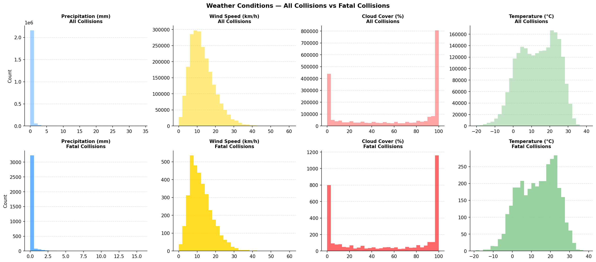
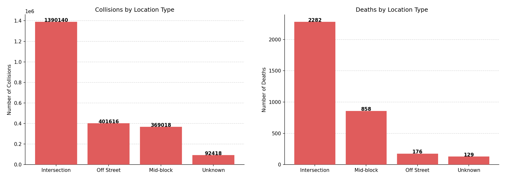

In 2014, New York City promised to eliminate all traffic deaths within a decade. Did it keep that promise?
Introduction
Vision Zero is an initiative that originated in Sweden in 1997. Its core idea is human well-being and safety comes first. That means recognizing the fragility of
humans and that errors are inevitable in traffic. Therefore the infrastructure must be designed to prevent such errors from resulting in fatalities. Vision zero is policy that
has now been adopted in multiple cities and countries globablly. For the US more than 40 US cities have set a clear goal of eliminating traffic fatalities.
New York being one of them, adopted this vision in 2014 with the goal of completely eliminating traffic deaths
within 10 years.
In this analysis, we investigate whether that promise has been kept, how much progress has been made,
and what could potentially be done to further reduce deaths based on data analysis.
The data used in this analysis comes from the NYC Open Data Motor Vehicle Collisions dataset,
which covers all reported collisions in New York City from 2013 to the present day.
The first thing we can ask is: What is the current state of traffic collisions, injuries, and deaths in NYC and how has it changed since Vision Zero was adopted?
Finding 01
Fewer crashes — but are New Yorkers actually safer?
−58%Collisions since 2014
−3%Injuries since 2014
−13%Deaths since 2014
227Deaths in 2025
Fig. 1 — Total collisions, injuries and deaths per year from 2014 to 2025. Source: NYC Open Data.
Let's start with an overall assessment of collisions, injuries and deaths through the years.
After the initation of Vision Zero 2014, we actually see the number of collision increasing until 2018 with 10 %, the number injuries increase by almost 20 %
and number of deaths drop almost 13%. Vision zero is off to a rocky start but at least fatalities are going down.
We then see a sharp drop in collisions in 2020 which is most likely explained by COVID-19 reducing commuting and street activity across the city.
This is followed by an increase in death and injuries. Injuries do not reach the pre-COVID levels but deaths reach an all time high that are for some values 20 % above pre-covid levels.
From 2023 to 2025 we then begin to see decline again in both injuries and deaths. So where do we stand in 2025?
In comparing 2014 to 2025, we see that collisions are down 58%, injuries are down just 3%, and deaths are
down 13% and at an all time low. While it's great collisions have been significatly reduced it's difficult to tell how much can be attributed to vision zero and
how much can be attributed to COVID-19 permanently changing behaviours in traffic. In the essence Vision Zero's goal of zero deaths has not been met.
Fewer crashes are happening, but the ones that do are more likely to hurt or kill someone.
Because deaths and injuries have not fallen proportionally to collisions, the rate of injury
and death per collision has actually increased since 2014. Next we want to see any patterns emerges from data analysis among fatalities in traffic.
Finding 02
Does weather affect fatality rates?

Fig. 2 — Weather conditions at time of all collisions vs fatal collisions only.
In an attempt to seek outside the data we wanted to see if any patterns could emerge from investigating external factors that might not have been in the awareness of the people involved.
Speculations were those such as preicipitation might make roads more slippery and therefore more dangerous. Or low visibility due to cloud cover might make it harder for drivers to see pedestrians and other vehicles. High wind speeds might reduce awareness of pedestrians and cyclist. Or high temperatures might weaken the concentration of drivers and make them more likely to make mistakes.
For this we investigated the weather conditions during the time of the fatal collisions. Specifically we look into the cloud cover, wind speed, precipitation and temperature during the time of the fatal collisions.
We found that the weather conditions during fatal collisions are not significantly different from the overall weather conditions in collisions in general. This suggests that weather is not a major contributing factor to fatal collisions in NYC, and that other factors such as driver behavior, road design, and traffic enforcement are likely more important to address in order to reduce fatalities.
Finding 03
Why do fatal collisions happen?
Visualization
Contributing factors — all vs fatal collisions (2025) — insert plots/contributing_factors_2025.png —
[Your observations and interpretation of the contributing factors plot go here.]
Finding 04
Where do fatal collisions occur?
Fig. 4 — Animated map of NYC traffic deaths 2014–2025. Each dot decays over 30 days. Use the play button or slider to explore.
In an attempt to visualize the deaths and let any patterns emerge, we created an animated map of traffic deaths in NYC from 2014 to 2025.
While pretty, it's difficult to extract any meaningful patterns from this. So to make it more insightful we thought that even though the
crashes are spread across the city, maybe the locations share some common characteristics.
So we investigated streets types dividning into cross street sections, mid-block, off-street, unknown.

Fig. 5 — Collisions vs Deaths by Location Type.
We found that while the majority of collisions happen at cross street sections and off street locations, the majority of deaths happen at cross street and mid-block locations.
This makes intutive sense since midblock roads compared to off street section, the speed of the vehicles will not be as regulated by traffic lights, parking spots or crossing sections.
Which mean the policy making could focus on making mid-block sections safer by implementing traffic calming measures such as speed bumps, raised crosswalks, or chicanes to slow down traffic and reduce the severity of collisions in these areas.
To elaborate on this we can see if any particular spots in the city are more dangerous than others.
Conclusion
The promise is still unmet — but the path forward is clear
Ten years after Vision Zero was adopted, New York City has made progress — but far less than
promised. Collisions have fallen sharply, yet deaths and injuries remain stubbornly high.
The data points to a consistent theme: driver behavior, not road design alone, is the
primary driver of fatal collisions. Unsafe speed, failure to yield, and disregard for
traffic signals dominate fatal crashes. Addressing these requires stronger enforcement,
not just infrastructure.